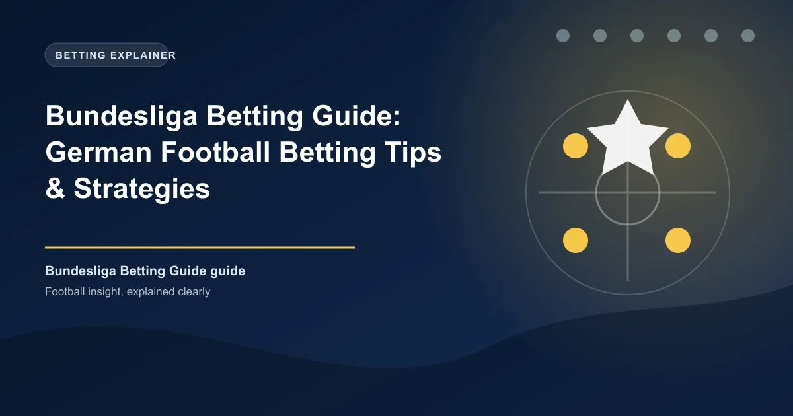

The Bundesliga is Europe's highest-scoring major league, making it a favorite for over/under and BTTS bettors. With Bayern Munich's dominance, RB Leipzig's rise, and competitive battles for European spots, German football offers unique betting opportunities.
This guide covers everything you need to know about betting on the Bundesliga - from understanding the fast-paced style to finding value in the markets.
The Bundesliga is known for its attacking football, passionate fans, and competitive nature. Here's what sets it apart for betting.
The Bundesliga is Europe's most attacking league. Teams play positive, forward-thinking football:
High-scoring matches: With 3.21 goals per match, Over 2.5 and BTTS hit more often than anywhere else.
Less home advantage: The combination of attacking play and large stadiums means home advantage is the lowest among major leagues.
Fast transitions: German teams are known for quick counter-attacks, leading to goal-rich matches.
Playing Style: Dominant possession, relentless attacking, high defensive line.
Key Bettor Insights:
Playing Style: High press, fast transitions, intense pressing.
Key Bettor Insights:
Playing Style: Attacking, entertaining, but defensively inconsistent.
Key Bettor Insights:
The Bundesliga averages 3.21 goals per match - the highest in Europe. Over 2.5 hits approximately 60% of matches, making it a reliable go-to market.
BTTS lands in approximately 56% of Bundesliga matches - the highest rate among major leagues. Excellent value in this market.
Bayern often face -2.0 or -2.5 lines. At those odds, they still offer value given their scoring frequency. Consider Dortmund +1.5 against Bayern.
The Bundesliga has the highest first-half goal rate in Europe. First half Over 1.5 is an excellent market.
With the highest scoring rate in Europe, Over 2.5 and even Over 3.5 offer excellent value. The key is finding matches with two attacking teams.
Both Teams to Score hits more often in the Bundesliga than any other major league. Mid-table matches are particularly profitable.
The bottom teams often get beaten badly by top teams, but occasionally pull off shocks. The title race is usually over by winter.
Bayern often start slowly before asserting dominance. Early season matches against well-organized teams can offer value against the big favorite.
The 50+2 rule (50+1 rule) makes German clubs financially stable but limits their spending. This creates a more competitive league than England's one-horse race. Don't underestimate the chasing pack.
The Bundesliga offers some of the best value for goal-focused bettors. The high-scoring nature means traditional markets like Over 2.5 and BTTS hit more frequently than anywhere else.
Focus on matches between two attacking teams, leverage Bayern's dominance with Asian Handicaps, and don't overlook the BTTS market. The Bundesliga rewards bettors who understand its unique attacking style.
Generate optimized accumulator combinations from today's AI-powered predictions. Set your target odds and get instant ticket suggestions.
Free Ticket Builder →